Breakthroughs in Fields, Strain and Disorder#
What happens to a lattice under a magnetic field, under strain, and with
disorder: the Peierls phase and the Aharonov-Bohm effect, Landau levels,
Zak’s magnetic translations and Hofstadter’s butterfly, Rashba
spin-orbit coupling, strain as a pseudo-magnetic field, and disorder
from Anderson localization and its scaling theory to Lifshitz tails,
multifractal wave functions, quasiperiodic localization and vacancy
zero modes. It traces the ideas behind
tbkit.system.System’s field, strain and disorder modifiers and
tbkit.graphene.
1930/2005 – Landau Levels: From Free Electrons to Graphene’s Dirac Fermions#
L. Landau showed in 1930 that a charged particle confined to a plane under a uniform perpendicular magnetic field has a spectrum that collapses from a continuum into a ladder of discrete, macroscopically degenerate levels – Landau levels – each level’s degeneracy set purely by the number of flux quanta threading the sample. Applied to a lattice via the Peierls substitution above, at weak field (magnetic length much larger than the lattice spacing) the same quantization survives near a band’s parabolic edge, evenly spaced by the cyclotron frequency \(\omega_c = eB/m^*\),
Seventy-five years later, K. Novoselov, A. Geim, and coworkers, and independently Y. Zhang, Y.-W. Tan, H. Stormer, and P. Kim, measured graphene’s Landau levels directly and found something Landau’s original theory never anticipated: because graphene’s low-energy electrons obey Wallace’s linear (massless-Dirac) dispersion above rather than the usual parabolic one, the ladder is spaced by \(\sqrt{n}\) rather than \(n\), and centered on an exact zero-energy level present at any field strength – a direct experimental fingerprint, via the resulting anomalous quantum Hall sequence, that graphene’s charge carriers behave as massless Dirac fermions rather than ordinary electrons.
The two ladders below are the same field applied to two different finite flakes – a square lattice (parabolic band edge) and a graphene flake (linear Dirac cone):
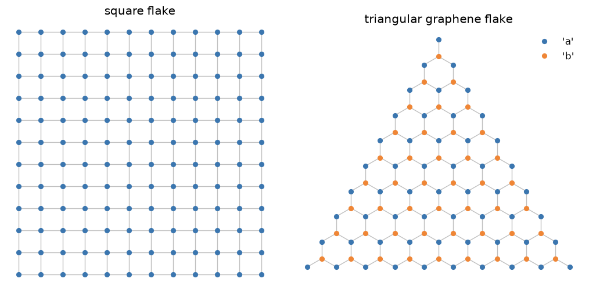
Implementation: both ladders come from exactly the same
tbkit.system.System.set_magnetic_field() used throughout this
chronology, applied to two different finite flakes: a square lattice
(parabolic band edge) and a graphene flake built from
tbkit.graphene.GrapheneLattice (linear Dirac dispersion). No
dedicated Landau-level function is needed – the quantization is an
emergent, weak-field limit of the same Peierls-substituted Hamiltonian
Hofstadter’s full flux sweep uses below.
References: L. Landau, “Diamagnetismus der Metalle,” Zeitschrift fur Physik 64, 629-637 (1930); K. S. Novoselov, A. K. Geim, S. V. Morozov, D. Jiang, M. I. Katsnelson, I. V. Grigorieva, S. V. Dubonos, and A. A. Firsov, “Two-Dimensional Gas of Massless Dirac Fermions in Graphene,” Nature 438, 197-200 (2005); Y. Zhang, Y.-W. Tan, H. L. Stormer, and P. Kim, “Experimental Observation of the Quantum Hall Effect and Berry’s Phase in Graphene,” Nature 438, 201-204 (2005).
Example: examples/magnetic_field/plot_landau_levels.py builds a 60x60 square-lattice
flake and a 1936-site triangular graphene flake at the same weak flux,
confirms exact particle-hole symmetry in both (the Peierls substitution
preserves bipartite chiral symmetry), confirms the square lattice’s
lowest 72 nearly-degenerate states average to within 15% of the
predicted \(E_0+\omega_c/2\), and confirms graphene’s clean n=1
plateau (102 states) matches the predicted \(v_F\sqrt{2eB}\) to
within 1%.
1933 – The Peierls Substitution#
R. Peierls showed how to add a magnetic field to a tight-binding model without abandoning the lattice: each hopping amplitude picks up a phase equal to the line integral of the vector potential along the bond,
with \(\Phi_0 = h/e\) the flux quantum. Because the phase around any closed loop of bonds is gauge-invariant and equals \(2\pi\) times the flux threading it, this recipe reproduces the Aharonov-Bohm and quantum Hall physics below directly on a lattice, without ever solving the continuum Schrodinger equation in a field.
Implementation: tbkit.system.System.set_peierls_phase() applies an
arbitrary phase function (any gauge, any spatial field profile);
set_magnetic_field() is a symmetric-gauge
convenience wrapper for a uniform field, \(\phi_{ij} =
\pi\alpha(x_iy_j - x_jy_i)\) with \(\alpha = B/\Phi_0\).
References: R. Peierls, “Zur Theorie des Diamagnetismus von Leitungselektronen,” Z. Phys. 80, 763-791 (1933).
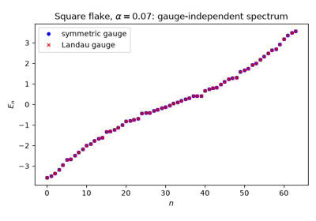
The Peierls Substitution: Flux Through the Plaquettes, in Any Gauge
1958 – Anderson Localization#
P. Anderson showed that quenched, random disorder is not a small perturbative correction to a metal’s conductivity but can halt transport outright: interference between all the scattering paths off a random potential exponentially localizes the electronic eigenstates, turning a metal into an insulator with no gap and no broken symmetry. Anderson’s own argument established this for strong enough disorder; the scaling theory of Abrahams, Anderson, Licciardello, and Ramakrishnan sharpened it two decades later to the statement that in one and two dimensions every state localizes at any nonzero disorder strength, so that only in three dimensions is there a genuine metal-insulator transition at finite disorder. A localized state is told from an extended one by its inverse participation ratio (1970/1980, below).
Implementation: tbkit.system.System.set_onsite_dis() and
set_hopping_dis() add uniform random disorder to
the onsite energies/hoppings; get_ipr() computes
\(\mathrm{IPR}_n\) for every eigenstate.
References: P. W. Anderson, “Absence of Diffusion in Certain Random Lattices,” Phys. Rev. 109, 1492-1505 (1958); E. Abrahams, P. W. Anderson, D. C. Licciardello, and T. V. Ramakrishnan, “Scaling Theory of Localization,” Phys. Rev. Lett. 42, 673-676 (1979).
1959 – The Aharonov-Bohm Effect#
Y. Aharonov and D. Bohm pointed out a startling consequence of quantum mechanics: a charged particle’s phase is affected by the vector potential \(\mathbf{A}\) even in a region where the magnetic field \(\mathbf{B}=\nabla\times\mathbf{A}\) itself vanishes identically – only the enclosed flux \(\Phi = \oint\mathbf{A}\cdot d\mathbf{l}\) matters, and only modulo the flux quantum \(\Phi_0\). On a ring threaded by flux \(\Phi\), this makes the energy spectrum exactly periodic in \(\Phi\) with period \(\Phi_0\).
A ring is not a Bravais lattice, so its sites are placed by hand – the flux that matters is the one enclosed by the polygon they span:
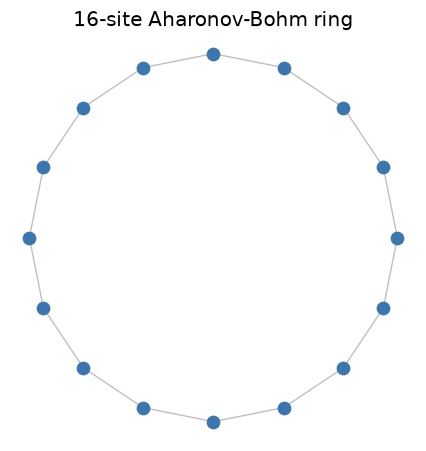
Implementation: directly reproduced by
tbkit.system.System.set_magnetic_field() (see 1933 above) applied to
a ring-shaped Lattice.
References: Y. Aharonov and D. Bohm, “Significance of Electromagnetic Potentials in the Quantum Theory,” Phys. Rev. 115, 485-491 (1959).
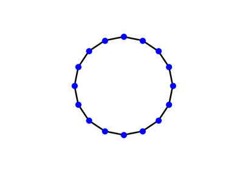
Aharonov-Bohm Ring: A Magnetic Field on a Lattice
1959/1984 – Rashba Spin-Orbit Coupling#
An electron moving at velocity \(\mathbf{v}\) through an electric field \(\mathbf{E}\) sees, in its own frame, a magnetic field \(\propto \mathbf{E}\times\mathbf{v}\) that acts on its spin. In a crystal with inversion symmetry these fields cancel on average; without it they do not. E. Rashba worked out the spin splitting of bands in wurtzite crystals, which lack an inversion centre (with V. Sheka, 1959, and in 1960), and Yu. Bychkov and E. Rashba (1984) applied it to the 2D electron gas at a surface or an asymmetric quantum well, where the electric field points out of the plane:
The coupling needs no magnet and keeps time-reversal symmetry, so the states at \(\mathbf{k}\) and \(-\mathbf{k}\) stay degenerate in Kramers pairs, yet every band splits in two away from \(\mathbf{k} = 0\), with its spin locked perpendicular to the momentum. Because the electric field can be set by a gate (Nitta et al., 1997), Rashba coupling became the knob of spintronics proposals such as the Datta-Das transistor, and one of the three ingredients, with a Zeeman field and superconductivity, of Majorana nanowires.
Implementation: tbkit.orbital.OrbitalSystem.set_rashba() adds
\(i\lambda(\boldsymbol\sigma\times\hat{\mathbf{d}}_{ij})_z\) to the
bonds of a spinful (spin=True) model, and
set_zeeman() a field
\(\mathbf{b}\cdot\boldsymbol\sigma\) that breaks time reversal. In
reciprocal space, the same term is a tbkit.kspace.PAULI matrix
hopping of a spin=True KSpace.
References: E. I. Rashba and V. I. Sheka, “Symmetry of energy bands in crystals of wurtzite type. II. Symmetry of bands with spin-orbit interaction included,” Fiz. Tverd. Tela: Collected Papers 2, 162-176 (1959); E. I. Rashba, “Properties of semiconductors with an extremum loop. I. Cyclotron and combinational resonance in a magnetic field perpendicular to the plane of the loop,” Sov. Phys. Solid State 2, 1109 (1960); Yu. A. Bychkov and E. I. Rashba, “Properties of a 2D electron gas with lifted spectral degeneracy,” JETP Lett. 39, 78-81 (1984); J. Nitta, T. Akazaki, H. Takayanagi, and T. Enoki, “Gate Control of Spin-Orbit Interaction in an Inverted In0.53Ga0.47As/In0.52Al0.48As Heterostructure,” Phys. Rev. Lett. 78, 1335-1338 (1997).
Example: examples/orbitals/plot_rashba_spin_orbit_coupling.py
confirms that the spectrum of a \(12\times12\) spinful square-lattice
torus is exactly the Rashba dispersion
\(E_\pm = 2t(\cos k_x + \cos k_y) \pm \sqrt{b_z^2 +
4\lambda^2(\sin^2k_x + \sin^2k_y)}\), with and without a Zeeman field;
that every level is a Kramers pair until \(b_z\) splits it (a gap
\(2b_z\) at \(\mathbf{k} = 0\)); and that the spin of both bands
lies in the plane, perpendicular to \((\sin k_x, \sin k_y)\), and
opposite for the two.
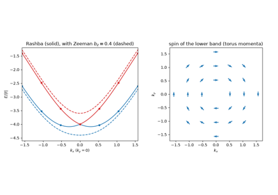
Rashba Spin-Orbit Coupling: Spin-Split Bands from Broken Inversion Symmetry
1964 – Zak’s Magnetic Translation Group#
A uniform magnetic field leaves a crystal physically homogeneous, but its vector potential is not: it grows across the sample, so the Peierls phases of a bond and of its translate differ and Bloch’s theorem seems lost. J. Zak (and, independently, E. Brown) restored it in 1964. A lattice translation followed by a gauge transformation – a magnetic translation – commutes with the Hamiltonian, but two of them commute with each other only up to the flux they enclose,
with \(\alpha\) the flux per unit cell in flux quanta. For a rational flux \(\alpha = p/q\), \(T_{\mathbf{a}_1}^q\) and \(T_{\mathbf{a}_2}\) commute: a magnetic unit cell of \(q\) cells carries Bloch states, the band splits into \(q\) subbands (Harper’s equation of 1955, for the square lattice), and since \(T_{\mathbf{a}_1}\) moves a Bloch state across the magnetic Brillouin zone, every level is \(q\)-fold degenerate there. This is the band theory on which Hofstadter’s butterfly (1976) and the TKNN integers of the quantum Hall effect are built.
Implementation: tbkit.kspace.magnetic_supercell() turns any 2D
KSpace model into the Bloch Hamiltonian of its
magnetic unit cell at flux \(p/q\), a KSpace
like any other, with the Peierls phases of a Landau gauge periodic along
\(\mathbf{a}_2\).
References: J. Zak, “Magnetic Translation Group,” Phys. Rev. 134, A1602-A1606 (1964); J. Zak, “Magnetic Translation Group. II. Irreducible Representations,” Phys. Rev. 134, A1607-A1611 (1964); E. Brown, “Bloch Electrons in a Uniform Magnetic Field,” Phys. Rev. 133, A1038-A1044 (1964); P. G. Harper, “Single Band Motion of Conduction Electrons in a Uniform Magnetic Field,” Proc. Phys. Soc. A 68, 874-878 (1955).
Example: examples/magnetic_field/plot_magnetic_translation_group.py
confirms that the magnetic supercell of the square lattice is Harper’s
\(q\times q\) matrix at \(\alpha = 1/3, 2/5, 3/7\); that at
\(\alpha = 1/3\) its spectrum repeats under
\(k_2 \to k_2 + 2\pi/3\), a symmetry the same 3-cell supercell
lacks without the field; and that every flux \(p/q\) with
\(q \le 13\) gives exactly \(q\) subbands, separated by gaps for
odd \(q\), which together draw Hofstadter’s butterfly from bulk bands
alone.
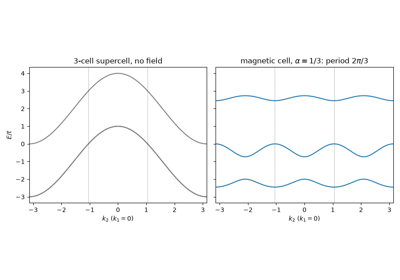
Zak’s Magnetic Translation Group: the Magnetic Supercell at Rational Flux
1964 – Lifshitz Tails#
Disorder pushes states beyond the band edge of the clean crystal, but I. Lifshitz showed in 1964 that it pushes remarkably few. A state deep in the tail needs a large region, of size \(\ell\), where the disorder happens to conspire – every onsite energy low, or every site present in a diluted lattice. The probability of such a region is exponentially small in its volume \(\ell^d\), while the kinetic energy of a state confined in it only falls as \(1/\ell^2\). Balancing the two gives an integrated density of states near the lowest possible energy \(E_0\)
an essential singularity, smaller than any power of \(E - E_0\), and the states of the tail are localized in the rare regions that make them. Lifshitz tails are why band edges of alloys and amorphous semiconductors are soft but still sharp, and they bound the density of states that every localization argument at the band edge starts from.
Implementation: tbkit.lattice.Lattice.remove_sites() dilutes a
lattice and tbkit.system.System.set_onsite_dis() adds uniform
onsite disorder; tbkit.kpm.dos() gives the density of states of
lattices too large to diagonalize.
References: I. M. Lifshitz, “The energy spectrum of disordered systems,” Adv. Phys. 13, 483-536 (1964); I. M. Lifshitz, S. A. Gredeskul, and L. A. Pastur, Introduction to the Theory of Disordered Systems (Wiley, 1988).
Example: examples/disorder/plot_lifshitz_tails.py removes 40% of
the sites of a 200 000-site chain at random and confirms that no state
falls below the clean band edge, while the integrated density of states
just above the lowest level \(E_\ell\) of an \(\ell\)-site
segment falls as \(p^\ell\) (fitted slope within 5% of
\(\ln p\)), the exact 1D Lifshitz law
\(\ln N \propto -(E + 2t)^{-1/2}\). In 2D the asymptotic law sets
in only where \(N\) is far below one state per sample, so the example
checks its hallmark instead. With the kernel polynomial method on a
\(400\times400\) square lattice missing 5% of its sites, the local
exponent \(d\ln N/d\ln(E - E_0)\) rises from 1.3 to above 5 between
\(E - E_0 = 0.8t\) and \(0.05t\), against 1 (within 0.1) at the
clean band edge: faster than any power. With uniform disorder
\(W = 2t\), the density of states spills past the clean edge
\(-4t\) but stops at the sample’s lowest eigenvalue, more than
\(t\) above \(E_0 = -4t - W\), with no state below it: the
cutoff is set by the sample, not by the method.
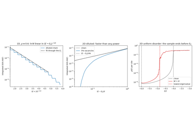
Lifshitz Tails in the Density of States of a Disordered Lattice
1970/1980 – The Inverse Participation Ratio and Multifractality#
R. Bell and P. Dean (1970), studying the vibrations of vitreous silica, asked how many atoms take part in a normal mode, and measured it with the participation ratio. Its inverse,
became the standard probe of localization: \(O(1/N)\) for a state spread over all \(N\) sites (extended), \(O(1)\) for a state pinned to a handful of them (localized). F. Wegner (1980) showed that its scaling with size carries more: generalizing it to every moment,
the exponents are \(D_q = 1\) for extended states and \(0\) for localized ones, but at a localization transition they are fractal dimensions that change with \(q\). The critical wave function is multifractal: its strong and weak peaks fill the lattice with different dimensions. The spectrum of \(D_q\) has since become a fingerprint of each class of Anderson transition.
Implementation: tbkit.system.System.get_ipr() computes
\(\mathrm{IPR}_n\) for every eigenstate from
get_eig() (eigenvec=True); the other
moments \(P_q\) follow from the same normalized weights,
sys.intensity.
References: R. J. Bell and P. Dean, “Atomic vibrations in vitreous silica,” Discuss. Faraday Soc. 50, 55-61 (1970); F. Wegner, “Inverse participation ratio in 2+ε dimensions,” Z. Phys. B 36, 209-214 (1980); F. Evers and A. D. Mirlin, “Anderson transitions,” Rev. Mod. Phys. 80, 1355-1417 (2008).
Example: examples/disorder/plot_inverse_participation_ratio.py
confirms that get_ipr is the definition above, then fits \(D_2\),
\(D_3\) and \(D_4\) over chains of 89 to 1597 sites: within 0.05
of 1 for a clean chain, within 0.05 of 0 for an Anderson chain, and
between 0.3 and 0.7, falling with \(q\), for the Harper chain at its
critical point.
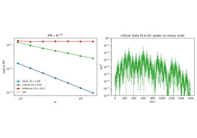
The Inverse Participation Ratio and Multifractal Wave Functions
1976 – Hofstadter’s Butterfly#
D. Hofstadter solved the tight-binding square lattice threaded by a continuously varying flux per plaquette \(\alpha = p/q\) (in units of \(\Phi_0\)) and found a spectrum of startling, self-similar complexity: at each rational flux \(p/q\), the band splits into \(q\) sub-bands, and plotting energy against \(\alpha\) traces out a fractal, recursively structured pattern now known as Hofstadter’s butterfly – one of the earliest and most famous numerically-discovered fractals in physics, and a direct illustration of how sensitively a Bloch spectrum can depend on a magnetic field via the Peierls substitution above.
Implementation: the same tbkit.system.System.set_magnetic_field()
used for the Aharonov-Bohm ring, swept continuously over a finite 2D
flake.
References: D. R. Hofstadter, “Energy levels and wave functions of Bloch electrons in rational and irrational magnetic fields,” Phys. Rev. B 14, 2239-2249 (1976).
1979 – The Scaling Theory of Localization#
Abrahams, Anderson, Licciardello and Ramakrishnan – the “gang of four” – argued that the conductance \(g\) of a disordered sample flows, as its size \(L\) grows, by a single scaling function \(\beta(g) = d\ln g/d\ln L\). It is negative for every \(g\) in one and two dimensions – every state localizes, at any disorder – but changes sign in three: a genuine metal-insulator transition, at a critical disorder \(W_c \approx 16.5\,t\) for the Anderson model of the cubic lattice (onsite energies uniform in \([-W/2, W/2]\)). The transition is visible in the level statistics: extended states repel (random-matrix statistics), localized ones do not (Poisson statistics), and the mean ratio of consecutive level spacings flows towards the first in the metal and the second in the insulator.
Implementation: 3D lattices (unit_cell and prim_vec as 3-tuples:
tbkit.lattice.Lattice, tbkit.system.System,
tbkit.kspace.KSpace); beyond System.dense_max sites, the
neighbours come from a k-d tree, and
get_eig_sparse() targets the states near an
energy.
References: E. Abrahams, P. W. Anderson, D. C. Licciardello, and T. V. Ramakrishnan, “Scaling Theory of Localization: Absence of Quantum Diffusion in Two Dimensions,” Phys. Rev. Lett. 42, 673-676 (1979); B. I. Shklovskii et al., Phys. Rev. B 47, 11487 (1993); V. Oganesyan and D. Huse, Phys. Rev. B 75, 155111 (2007).
Example: examples/three_dimensions/plot_anderson_transition.py
confirms random-matrix statistics at weak disorder and near-Poisson
statistics at strong disorder, and that the curves of two sizes cross
between \(W = 12t\) and \(20t\), around \(W_c\).
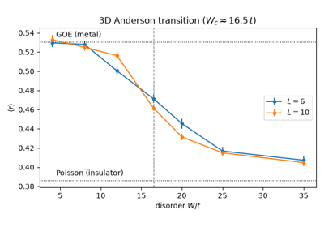
The Scaling Theory of Localization: the 3D Anderson Transition
1980 – Aubry-André Quasiperiodic Localization#
In one dimension, any random disorder localizes every state. S. Aubry and G. André (1980) replaced the random potential by a quasiperiodic one, a cosine incommensurate with the lattice,
and found what random disorder forbids in 1D: a sharp metal-insulator transition. Every state is extended for \(\lambda < 2t\) and every state is localized for \(\lambda > 2t\), with the same localization length \(1/\ln(\lambda/2t)\) at all energies. The critical point follows from a self-duality: a Fourier transform maps the model with \((t, \lambda)\) onto itself with \((\lambda/2, 2t)\), exchanging extended and localized states, so the two phases meet where the model is its own dual. At \(\lambda = 2t\) it is Harper’s equation for the square lattice in a field (1955), whose critical states are multifractal. The transition was observed with ultracold atoms in a bichromatic optical lattice (Roati et al., 2008) and in photonic waveguide lattices (Lahini et al., 2009).
Implementation: the quasiperiodic potential is a value function of the
site index passed to tbkit.system.System.set_onsite() (site has
an 'index' field), with \(\lambda\) and \(\phi\) set by
get_ham(); get_ipr()
tells the phases apart.
References: S. Aubry and G. André, “Analyticity breaking and Anderson localization in incommensurate lattices,” Ann. Israel Phys. Soc. 3, 133-164 (1980); G. Roati, C. D’Errico, L. Fallani, M. Fattori, C. Fort, M. Zaccanti, G. Modugno, M. Modugno, and M. Inguscio, “Anderson localization of a non-interacting Bose-Einstein condensate,” Nature 453, 895-898 (2008); Y. Lahini, R. Pugatch, F. Pozzi, M. Sorel, R. Morandotti, N. Davidson, and Y. Silberberg, “Observation of a Localization Transition in Quasiperiodic Photonic Lattices,” Phys. Rev. Lett. 103, 013901 (2009).
Example: examples/disorder/plot_aubry_andre_localization.py
confirms on a 377-site chain that the mean IPR stays below \(5/N\)
up to \(\lambda = 1.5t\) and exceeds 0.25 from \(\lambda =
2.2t\); that at \(\lambda = W = t\) its IPR falls as \(1/N\)
while that of an Anderson chain saturates; and that on a 233-site ring
with \(\beta = 144/233\) the spectrum at \(\lambda\) is exactly
\(\lambda/2t\) times the spectrum at \(4t^2/\lambda\).
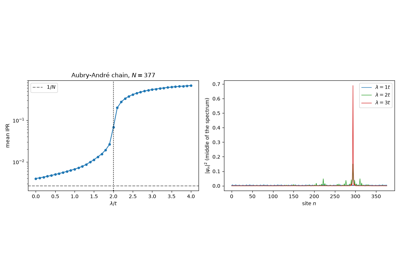
Aubry-André Localization: a Self-Dual Metal-Insulator Transition in 1D
2006 – Vacancy-Induced Zero Modes in Graphene#
V. Pereira, F. Guinea, J. Lopes dos Santos, N. Peres and A. Castro Neto showed in 2006 that removing a single carbon atom from graphene binds a state at exactly the Dirac energy \(E = 0\). It lives only on the sublattice opposite to the vacancy and is quasi-localized: its amplitude falls as \(1/r\), so slowly that it cannot be normalized in an infinite sheet. The count is set by the bipartite structure, the same sublattice imbalance behind Lieb’s theorem (see Breakthroughs in Flat Bands and Interactions): a nearest-neighbour Hamiltonian on sublattices A and B has at least \(\bigl||A| - |B|\bigr|\) states at \(E = 0\), all on the majority sublattice. Vacancies on one sublattice add zero modes; vacancies on both pair up and push them away from zero. The same physics makes any strong enough impurity a resonance near the Dirac point, and the vacancy is its limit. With interactions, the zero mode carries a local magnetic moment, seen by scanning tunnelling microscopy at single vacancies (Ugeda et al., 2010).
Implementation: tbkit.lattice.Lattice.remove_sites() removes
sites before the System is built, and
set_onsite_def() sets the onsite energy of
single sites; get_eig_sparse() finds the
states nearest \(E = 0\) by shift-invert.
References: V. M. Pereira, F. Guinea, J. M. B. Lopes dos Santos, N. M. R. Peres, and A. H. Castro Neto, “Disorder Induced Localized States in Graphene,” Phys. Rev. Lett. 96, 036801 (2006); M. M. Ugeda, I. Brihuega, F. Guinea, and J. M. Gómez-Rodríguez, “Missing Atom as a Source of Carbon Magnetism,” Phys. Rev. Lett. 104, 096804 (2010).
Example: examples/disorder/plot_vacancy_zero_modes.py removes one
site from a \(32\times32\) graphene torus (no state within \(0.1t\)
of \(E = 0\) before) and confirms one zero mode, entirely on the other
sublattice, with a ring-averaged weight falling as \(r^{-2}\)
(fitted exponent within 0.15). It confirms that an onsite energy
\(U\) on the same site brings a state monotonically to \(E = 0\)
and onto the other sublattice as \(U\) grows to \(1000t\), and
that a second vacancy leaves two zero modes on the same sublattice and
none on the opposite one.
2010 – Strain as a Gauge Field: Pseudo-Magnetic Fields#
F. Guinea, M. Katsnelson, and A. Geim pointed out that graphene offers a way to build a magnetic field out of nothing but mechanical deformation. Straining the sheet changes its bond lengths and therefore its hopping amplitudes, and near the Dirac point a smooth modulation of the three nearest-neighbor hoppings enters the Dirac equation in precisely the slot a vector potential occupies: it displaces the Dirac cone in momentum space rather than shifting its energy. A triaxial strain whose modulation grows linearly with distance from the center therefore acts on the electrons as a uniform pseudo-magnetic field,
(\(\beta\) the strain strength in the convention below, \(\hbar=e=a=1\)), quantizing the spectrum into exactly the relativistic ladder \(E_n = \mathrm{sign}(n)v_F\sqrt{2B_s|n|}\) that a real field produces.
What makes this more than an analogy is what is missing. Every hopping stays real, so the Hamiltonian is real, time-reversal symmetry is never broken – and a time-reversal-symmetric Hamiltonian cannot host a genuine magnetic field. The resolution is that the pseudo-field must point the opposite way at the second valley \(\mathbf{K}'\): carriers in the two valleys bend in opposite directions, so the sample carries no net Hall current even while each valley is fully Landau-quantized. Nor is the effect bounded by what a laboratory magnet can deliver, since nothing is being magnetized: Levy and coworkers measured pseudo-Landau levels in strained graphene nanobubbles corresponding to fields above 300 T, an order of magnitude beyond the strongest static fields available anywhere.
Implementation:
tbkit.graphene.GrapheneSystem.set_hop_linear_strain() sets every
nearest-neighbor bond to \(t_{ij} = t(1 + \tfrac14\beta\,
\hat{\boldsymbol\delta}_{ij}\cdot\mathbf{r}_{ij})\), with
\(\hat{\boldsymbol\delta}_{ij}\) the bond direction and
\(\mathbf{r}_{ij}\) its midpoint – linear triaxial strain, measured
from the coordinate origin, so the flake must be centered on it.
get_beta_lims() returns the range of
strains that still leaves every hopping positive, and
get_butterfly() sweeps
\(\beta\) across that whole range – the strain analogue of
Hofstadter’s flux sweep (1976, above).
References: F. Guinea, M. I. Katsnelson, and A. K. Geim, “Energy gaps and a zero-field quantum Hall effect in graphene by strain engineering,” Nature Physics 6, 30-33 (2010); N. Levy, S. A. Burke, K. L. Meaker, M. Panlasigui, A. Zettl, F. Guinea, A. H. Castro Neto, and M. F. Crommie, “Strain-Induced Pseudo-Magnetic Fields Greater Than 300 Tesla in Graphene Nanobubbles,” Science 329, 544-547 (2010); the strain gauge field itself goes back to H. Suzuura and T. Ando, “Phonons and electron-phonon scattering in carbon nanotubes,” Phys. Rev. B 65, 235412 (2002).
Example: examples/strain/plot_pseudo_magnetic_field.py strains a
1728-site circular graphene flake at \(\beta=-0.05\), confirms the
Hamiltonian is exactly real (unlike the complex, Peierls-substituted one
it is compared against), and confirms that its bulk states nevertheless
bunch onto the first four pseudo-Landau levels
\(E_n = \tfrac32 t\sqrt{|\beta| n}\) to within 3%, with the
\(\sqrt{n}\) spacing of a Dirac cone rather than the even spacing of
a parabolic band. It then confirms that \(E_1\) tracks
\(\sqrt{|\beta|}\) across a range of strains, and that a real field
of the same strength, \(\alpha = B_s/2\pi\), reproduces the same
\(E_1\) to within 3% through a complex Hamiltonian.
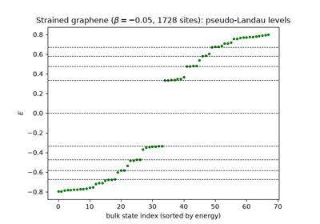
Strain as a Gauge Field: Pseudo-Landau Levels in Graphene